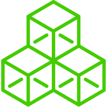
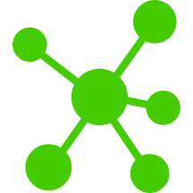

The Modules
Mandatory
Orchestra Platform
Mandatory
Journey Manager ENTRY
Journey Manager STANDARD
Journey Manager PREMIUM
Optional
Appointment Manager ENTRY
Appointment Manager STANDARD
Concierge
Reception
Connect
Counter
Staff Notification
Media Display
Media Display Digital
Global SMS Service
Myfunwait
Mobile Ticket
Voice Announcement
Customer Notification
Context Marketing
Customer Feedback
Delivered Services, Outcomes and Marks
Customer Feedback Basic
Customer Feedback
Delivered Services, Outcomes and Marks
Customer Feedback Basic
Distributed Operations
Surface Editor
Hardware Monitoring
LDAP
Auditing
Staging
High Availability
Digital Signage Integration
3rd party kiosk Integration
Calendar Integration
Appointment Integration
Customer Identification Integration
Business Intelligence Integration
Mobile Integration
Workforce Integration
Entry Point Integration
Service Point Integration
Management Info Integration
HL7 Integration
모바일 티켓, 빅데이터 플랫폼을 이용한 다양한 분석도구, 고객 피드백 분석

Modular필요한 기능의 추가 및 확장 용이

Centralized중앙에서 최소 인원으로 모든 지점의 CJM시스템 구성, 통제 및 모니터링
기존 장비, 시스템과의 통합이 가능하며, 고객의 사업규모에 따라 유연한 확장성을 제공, Rest API 제공
데이터 암호화(SSL/TLS, AES)
 GDPR Ready
GDPR Ready